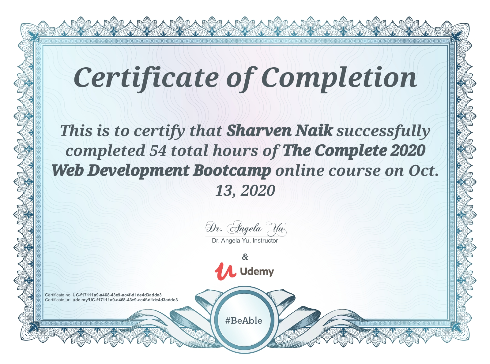

Sharven Naik
Summary
Seeking a career change from Quality Engineer in manufacturing to IT Field, utilizing my Core Javaproficiency and foundational web development skills. Eager to contribute analytical thinking, problem-solving abilities, and a dedication to excellence to a dynamic software team. Committed to continuouslearning and embracing new challenges in the IT field.
Education
Bachelor of Engineering in Electronics and Communications
Agnel Institute of Technology and Design (AITD)
Passout:2020
Work Experience
Organization: Radish Technologies
Designation: Quality Engineer
Duration: MAY 2022 - MAY 2023
- Implemented and maintained quality management systems, ensuring compliance with industrystandards and regulations.
- Managed incoming, in-process, and outgoing quality inspections, conducting root cause analyses andimplementing corrective actions.
- Applied 7QC Tools for problem-solving, utilizing statistical techniques to monitor process performance.
- Led 5S methodology implementation for improved workplace organization and efficiency.
- Coordinated customer complaint handling, conducting investigations and implementing correctiveactions.
- Collaborated with NPD team to integrate quality standards into new product development processes.
- Trained employees on quality standards, tools, and processes, fostering a culture of quality awareness.
- Utilized quality inspection tools and mentored junior team members to enhance product quality.
- Led Kaizen events, driving continuous improvement initiatives and waste reduction.
Skills
- Programming Languages: Java (Core Java), Python (basics)
- Web Development: HTML, CSS, JavaScript (Basics), ReactJS
- Database: Oracle SQL
- Quality Assurance: Root Cause Analysis ,5S , kaizen, Inspection tools (Vernier caliper, radius gauge, Heightgauge)
- Tools: IntelliJ IDE, Vscode, MS (Word, Excel, Powerpoint)
Certifications
Complete web development bootcamp 2020
Learned about HTML, CSS, NojeJS, React-JS, Hosting pages
